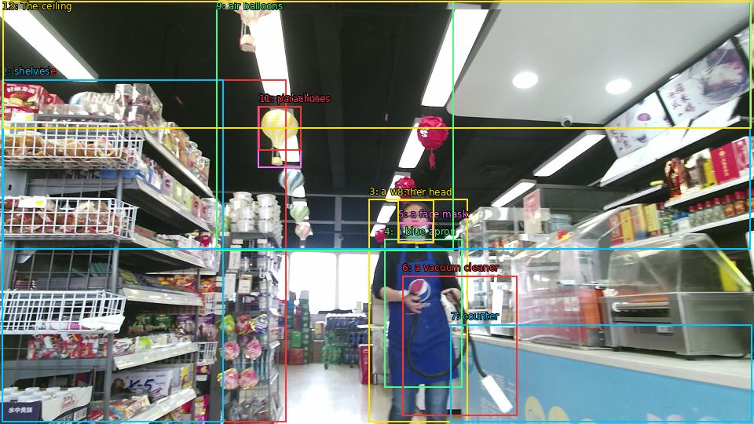

The image shows the interior of a supermarket aisle. The aisle is filled with various items such as food, drinks, and snacks. On the left side of the aisle, there are shelves stocked with different types of food and drinks. In the center of the image, there is a woman wearing a blue apron and a face mask, holding a vacuum cleaner. She is standing in front of a counter with a sign that reads "Merry Christmas". Above her head, there hangs a bunch of colorful hot air balloons in the shape of parachutes. The ceiling is high and has recessed lighting.

Original · Caption raw · Grounding raw · Koordinate
Številke so lokalni ID regije. Dolge slikovne oznake so skrajšane; spodaj so celotne fraze. Napovedane regije se lahko prekrivajo ali opisujejo skupine.
| ID | Celotna fraza | bbox xyxy |
|---|---|---|
| 1 | The aisle | [2.3999998569488525, 101.25000762939453, 364.3199768066406, 537.5700073242188] |
| 2 | shelves | [2.3999998569488525, 101.25000762939453, 284.6399841308594, 537.5700073242188] |
| 3 | a woman | [469.91998291015625, 253.53001403808594, 595.6799926757812, 537.030029296875] |
| 4 | a blue apron | [489.1199951171875, 304.83001708984375, 588.0, 493.83001708984375] |
| 5 | a face mask | [507.3599853515625, 283.2300109863281, 551.5199584960938, 308.6100158691406] |
| 6 | a vacuum cleaner | [512.1599731445312, 351.27001953125, 658.0799560546875, 529.4700317382812] |
| 7 | counter | [573.5999755859375, 413.3700256347656, 957.5999755859375, 537.5700073242188] |
| 8 | her head | [506.3999938964844, 254.61001586914062, 552.47998046875, 309.1500244140625] |
| 9 | air balloons | [275.0400085449219, 1.8900001049041748, 577.4400024414062, 319.4100036621094] |
| 10 | air balloons | [328.79998779296875, 135.27000427246094, 383.5199890136719, 213.57000732421875] |
| 11 | parachutes | [329.7599792480469, 135.8100128173828, 383.5199890136719, 191.97000122070312] |
| 12 | The ceiling | [3.359999895095825, 1.8900001049041748, 955.6799926757812, 317.25] |
| 13 | The ceiling | [3.359999895095825, 1.8900001049041748, 956.6399536132812, 163.88999938964844] |